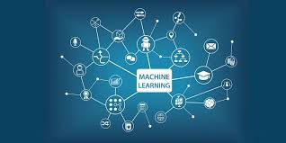

HTML 5
HTML5 (HyperText Markup Language, versión 5) es la quinta revisión importante del
lenguaje básico de la World Wide Web, HTML. Contiene un conjunto más amplio de tecnologías que permite a los sitios Web y a las aplicaciones ser más diversas y de gran alcance.
Diseñado para ser utilizable por todos los desarrolladores de Open Web, esta página referencía numerosos recursos sobre las tecnologías de HTML5, clasificados en varios grupos según su función.
Al no ser reconocido en viejas versiones de navegadores por sus nuevas etiquetas, se recomienda al usuario común actualizar
su navegador a la versión más nueva, para poder disfrutar de todo el potencial que provee HTML5.
HTML5 establece una serie de nuevos elementos y atributos que reflejan el uso típico de los sitios web modernos. Algunos de ellos son técnicamente similares a las etiquetas (div) y (span), pero tienen un significado semántico, como por ejemplo (nav) (bloque de navegación del sitio web) y (footer).
-
Nuevos elementos -
Diferencias entre HTML5 y HTML4/XHTML
-
Novedades -
Ejemplos de codigos -
Historia -
Conceptos basicos
-
Técnicas de HTML5 -
Como Usar HTML5
Información mas detallada aquí ..
Videos para aprender más ..

CSS3
El nombre hojas de estilo en cascada viene del inglés Cascading Style Sheets, del que toma sus siglas. CSS es un lenguaje usado para definir la presentación de un documento estructurado escrito en HTML o XML (y por extensión en XHTML). El W3C(World Wide Web Consortium) es el encargado de formular la especificación de las hojas de estilo que servirán de estándar para los agentes de usuario o navegadores.
El CSS sirve para definir la estética de un sitio web en un documento externo y eso mismo permite que modificando ese documento (la hoja CSS) podamos cambiar la estética entera de un sitio web, el mismo sitio web puede variar totalmente de estética cambiando solo la CSS, sin tocar para nada los documentos HTML o jsp o asp que lo componen.
CSS es un lenguaje utilizado para dar estética a un documento HTML (colores, tamaños de las fuentes, tamaños de elemento, con css podemos establecer diferentes reglas que indicarán como debe presentarse un documento. Podemos indicar propiedades como el color, el tamaño de la letra, el tipo de letra, si es negrita, si es itálica, también se puede dar forma a otras cosas que no sean letras, como colores de fondo de una pagina, tamaños de un elemento (por ejemplo el alto y el ancho de una tabla.
CSS está diseñado principalmente para marcar la separación del contenido del documento y la forma de presentación de este, características tales como las capas o layouts, los colores y las fuentes. Esta separación busca mejorar la accesibilidad del documento, proveer más flexibilidad y control en la especificación de características presentacionales, permitir que varios documentos HTML compartan un mismo estilo usando una sola hoja de estilos separada en un archivo .css, y reducir la complejidad y la repetición de código en la estructura del documento.
-
Sintaxis -
Limitaciones
-
Ventajas -
Framework CSS -
Historia -
Que es CSS3
-
Como Usar CSS3 -
Aprendiendo CSS3
Información mas detallada aquí ...
Videos para aprender más ..
JAVASCRIPT
JavaScript (abreviado comúnmente JS) es un lenguaje de programación interpretado,
dialecto del estándar ECMAScript. Se define como orientado a objetos,
basado en prototipos, imperativo, débilmente tipado y dinámico.
Se utiliza principalmente en su forma del lado del cliente (client-side), implementado como parte de un navegador web permitiendo mejoras en la interfaz
de usuario y páginas web dinámicas4 aunque existe una forma de JavaScript del lado del servidor(Server-side JavaScript o SSJS).
Su uso en aplicaciones externas a la web, por ejemplo en documentos PDF, aplicaciones de escritorio (mayoritariamente widgets es también significativo.
JavaScript se diseñó con una sintaxis similar a C, aunque adopta nombres y convenciones del lenguaje de programación Java. Sin embargo, Java y JavaScript
tienen semánticas y propósitos diferentes.
-
Historia -
Características -
Usos en páginas web -
Seguridad
-
Aprendiendo JavaScript -
Por Que JS -
Como Usar js -
JavaScript
Información mas detallada aquí ...
Videos para aprender más ...
PROGRESSIVE WEB APPS
Progressive web apps (aplicaciones web progresivas),son aplicaciones web que son páginas web o sitios web regulares , pero que pueden aparecer al usuario como aplicaciones tradicionales o aplicaciones móviles nativas . El tipo de aplicación intenta combinar características ofrecidas por la mayoría de los navegadores modernos con los beneficios de una experiencia móvil .
Las aplicaciones web progresivas son una mejora de la tecnología web existente. Como tales, no requieren agrupación o distribución por separado. La publicación de una aplicación web progresiva es como lo sería para cualquier otra página web. A partir de abril de 2018, las aplicaciones web progresivas son compatibles con los navegadores Microsoft Edge, Google Chrome, Mozilla Firefox y Safari, pero es posible que más navegadores admitan las características necesarias en el futuro.
En 2015, el diseñador Frances Berriman y el ingeniero de Google Chrome Alex Russell acuñaron el término "aplicaciones web progresivas" [3] para describir aplicaciones que aprovechan las nuevas características compatibles con navegadores modernos, incluidos los trabajadores de servicios y los manifiestos de aplicaciones web , que permiten a los usuarios actualizar aplicaciones web a aplicaciones web progresivas en su sistema operativo (SO) nativo .
Son aplicaciones web, no aplicaciones nativas , pero usar cualquiera de ellas es (o debería ser) indiferente para el usuario.
-
Caracteristicas
-
Costos -
Alcance -
mas -
Historia Progressive Web Apps
-
Que Es Progressive Web Apps -
Usos -
Ejemplos Practicos
Información mas detallada aquí.....
Videos para aprender más .....

INTELIGENCIA ARTIFICIAL
La inteligencia artificial (IA), también llamada inteligencia computacional, es la inteligencia exhibida por máquinas. En ciencias de la computación, una máquina «inteligente» ideal es un agente racional flexible que percibe su entorno y lleva a cabo acciones que maximicen sus posibilidades de éxito en algún objetivo o tarea.
Según Takeyas (2007) la IA es una rama de las ciencias computacionales encargada de estudiar modelos de cómputo capaces de realizar actividades propias de los seres humanos en base a dos de sus características primordiales: el razonamiento y la conducta.
En la Inteligencia Artificial, se han desarrollado diferentes lenguajes específicos para los diferentes campos de aplicación. Estos lenguajes en su mayoría cuentan con una serie de características comunes que podemos resumir de la siguiente forma: Este tipo de software ofrece una gran modularidad. Poseen gran capacidad de tomar decisiones de programación hasta el último momento, es decir cuando el programa ya está ejecutándose. .
Ofrecen grandes facilidades en el manejo de listas, y esto es importante, ya que las listas son la estructura más habitual usada para la representación del conocimiento en la Inteligencia Artificial. Facilitan la realización de ciertos tipos de deducción automática permitiendo también la creación de una base de hechos (lugar donde se recogen los datos iniciales del problema a resolver y los resultados intermedios una vez obtenidos). Permite el uso simultáneo de estructuras que incorporan conocimiento declarativo y conocimiento procedimental. Tienen una marcada orientación gráfica. Además, las herramientas de Inteligencia Artificial permiten hacer un seguimiento de todos los cambios realizados a lo largo de toda la sesión. Disponen herramientas capaces de desarrollar programas que son capaces de comprender otros programas y también de realizar modificaciones sobre ellos.
-
Categorías de IA....
-
Historia
-
Ventajas de IA.
-
Desventajas o peligros de IA.
Información mas detallada aquí.....
Videos para aprender mas.....

Machine Learning
Machine learning o aprendizaje automático.
El Machine Learning en su uso más básico es la práctica de usar algoritmos para parsear datos, aprender de ellos y luego ser capaces de hacer una predicción o sugerencia sobre algo.
Aquí se le proporciona a un algoritmo un conjunto de reglas para que las aplique cuando se encuentre con los datos pertinentes. Pero el software tiene la capacidad de adaptar dichas reglas y crear otras nuevas para mejorar su tasa de acierto.
-
Machine learning comon diciplina
-
Tipos de algoritmos
-
Machine learning
-
Para aprender mas
Información mas detallada aquí.....
Videos para aprender mas.....
Deep Learning
Deep Learning es un subconjunto dentro del campo del Machine Learning, el cual predica con la idea del aprendizaje desde el ejemplo.
En Deep Learning, en lugar de enseñarle a ordenador una lista enorme de reglas para solventar un problema, le damos un modelo que pueda evaluar
ejemplos y una pequeña colección de instrucciones para modificar el modelo cuando se produzcan errores. Con el tiempo esperamos que esos modelos
sean capaces de solucionar el problema de forma extremadamente precisa, gracias a que el sistema es capaz de extraer patrones.
-
Definiciones
-
Mas
-
Curiosidades
-
Conceptos Basicos Deep Learning
Información mas detallada aquí.....
Videos para aprender más:
Redes Neuronales
Las redes neuronales (también conocidas como sistemas conexionistas) son un modelo computacional basado en un gran conjunto de unidades neuronales
simples (neuronas artificiales), de forma aproximadamente análoga al comportamiento observado en los axones de las neuronas en los cerebros biológicos.
Estos sistemas aprenden y se forman a sí mismos, en lugar de ser programados de forma explícita, y sobresalen en áreas donde la detección de soluciones
o características es difícil de expresar con la programación convencional.
-
Conceptos
-
Algoritmos de aprendizaje
-
Conceptos
-
Explicación detallada
Información mas detallada aquí.....
Videos para aprender más:
CRIPTOMONEDA
Un criptomoneda , criptodivisa (del inglés cryptocurrency) o criptoactivo es un medio digital de intercambio. La primera criptomoneda que empezó
a operar fue el bitcoin en 2009 y, desde entonces, han aparecido muchas otras con diferentes características y protocolos como Litecoin, Ethereum,
Ripple, Dogecoin.
Los primeros intentos de integrar la criptografía con el dinero electrónico fueron hechos por David Chaum, mediante el DigiCash y el ecash, los cuales utilizaban la criptografía para volver anónimas las transacciones de dinero, aunque con una emisión y liquidación (pago) centralizado.
Las criptomonedas hacen posible el llamado internet del valor, también conocido por las siglas IoV (del inglés internet of value), también llamado Internet del dinero: son aplicaciones de Internet que permiten el intercambio de valor en forma de criptomonedas. Este valor pueden ser contratos, propiedad intelectual, acciones o cualquier propiedad de algo con valor. Las cosas de valor ya se podían intercambiar antes usando sistemas de pago como Paypal. Sin embargo la diferencia entre pagar con algo como Paypal y pagar con una criptomoneda consiste en que pagar con Paypal requiere que el pago se haga a través de redes privadas como las de las tarjetas de crédito y bancos, mientras que el pago usando criptomonedas no tiene intermediarios. Va directamente del comprador al vendedor. De esta forma, se tiene un sistema de transferencia universal de valor, libre de intermediaciones.
En los sistemas de criptomonedas, se garantiza la seguridad, integridad y equilibrio de sus estados de cuentas (contabilidad) por medio de un entramado
de agentes (transferencia de archivo segmentada o transferencia de archivo multifuente) que se verifican (desconfían) mutuamente llamados mineros, que
son, en su mayoría, público en general y protegen activamente la red (el entramado) al mantener una alta tasa de procesamiento de algoritmos, con la
finalidad de tener la oportunidad de recibir una pequeña propina, que se reparte de manera aleatoria.
-
Criptomoneda mas conocidas -
Caracteristicas
-
Historia -
Para saber mas -
Sistemas de Criptomoneda -
Criptomoneda
-
Importancia -
Beneficios
Información más detallada aquí:
Videos para aprender más:

BLOCKCHAIN
Una cadena de bloques o cadena articulada[cita requerida], conocida en inglés como blockchain, es una estructura de datos en la que la información contenida se agrupa en conjuntos (bloques) a los que se les añade metainformaciones relativas a otro bloque de la cadena anterior en una línea temporal, de manera que gracias a técnicas criptográficas, la información contenida en un bloque sólo puede ser repudiada o editada modificando todos los bloques posteriores. Esta propiedad permite su aplicación en entorno distribuido de manera que la estructura de datos blockchain puede ejercer de base de datos pública no relacional que contenga un histórico irrefutable de información
En la práctica ha permitido, gracias a la criptografía asimétrica y las funciones de resumen o hash, la implementación de un registro contable (ledger) distribuido que permite soportar y garantizar la seguridad de dinero digital. Siguiendo un protocolo apropiado para todas las operaciones efectuadas sobre la blockchain, es posible alcanzar un consenso sobre la integridad de sus datos por parte de todos los participantes de la red sin necesidad de recurrir a una entidad de confianza que centralice la información. Por ello se considera una tecnología en la que la "verdad" (estado confiable del sistema) es construída, alcanzada y fortalecida por los propios miembros; incluso en un entorno en el que exista una minoría de nodos en la red con comportamiento malicioso (nodos sybil) dado que, en teoría, para comprometer los datos, un atacante requeriría de una mayor potencia de cómputo y presencia en la red que el resultante de la suma de todos los restantes nodos combinados. Por las razones anteriores, la tecnología blockchain es especialmente adecuada para escenarios en los que se requiera almacenar de forma creciente datos ordenados en el tiempo, sin posibilidad de modificación ni revisión y cuya confianza pretenda ser distribuída en lugar de residir en una entidad certificadora.
Esta propiedad permite su aplicación en entorno distribuido de manera que la estructura de datos blockchain puede ejercer de base de datos pública no
relacional que contenga un histórico irrefutable de información.
Los datos almacenados en la cadena de bloques normalmente suelen ser transacciones (p. ej. financieras) por eso es frecuente llamar a los datos transacciones. Sin embargo, no es necesario que lo sean. Realmente podríamos considerar que lo que se registran son cambios atómicos del estado del sistema. Por ejemplo una cadena de bloques puede ser usada para estampillar documentos y asegurarlos frente a alteraciones
-
Blockchain y sus aplicaciones
-
Clasificaciones -
Cadena lateral -
mas -
Que es Blockchain
-
Implementaciones -
Ventajas -
Dessventajas
Información más detallada aquí:
Videos para aprender más:

CYBERSEGURIDAD
Seguridad informática. La seguridad informática, también conocida como ciberseguridad o seguridad de tecnologías de la información, es el área relacionada
con la informática y la telemática que se enfoca en la protección de la infraestructura computacional y todo lo relacionado con esta y, especialmente, la
información contenida en una computadora o circulante a través de las redes de computadoras.
La ciberseguridad comprende software (bases de datos, metadatos, archivos), hardware, redes de computadoras y todo lo que la organización valore y
signifique un riesgo si esta información confidencial llega a manos de otras personas, convirtiéndose, por ejemplo, en información privilegiada.
La definición de seguridad de la información no debe ser confundida con la de «seguridad informática», ya que esta última solo se encarga de la seguridad
en el medio informático, pero la información puede encontrarse en diferentes medios o formas, y no solo en medios informáticos.
La seguridad informática es la disciplina que se encarga de diseñar las normas, procedimientos, métodos y técnicas destinados a conseguir un sistema de información seguro y confiable.
-
CyberSeguridad y sus objectivos
-
Analisis de riesgo -
Proteccion contra virus -
mas -
CyberSeguridad
-
Importancia -
Usos -
Ventajas
Información más detallada aquí:
Videos para aprender más:
REALIDAD VIRTUAL
La realidad virtual ( RV ) es un entorno de escenas u objetos de apariencia real. La acepción más común refiere a un entorno generado mediante tecnología
informática, que crea en el usuario la sensación de estar inmerso en él. Dicho entorno es contemplado por el usuario a través de un dispositivo conocido
como gafas o casco de realidad virtual.
Este puede ir acompañado de otros dispositivos, como guantes o trajes especiales, que permiten una mayor interacción con el entorno así como la percepción
de diferentes estímulos que intensifican la sensación de realidad.
El término realidad virtual (RV) se popularizó a finales de la década de 1980 por Jaron Lanier, uno de los pioneros del campo. Al mismo tiempo, también
apareció el término Realidad Artificial (RA).
Una definición que se usa con mayor frecuencia para entornos virtualmente generados es la de "estar en un lugar o target="blank"> entorno , incluso cuando uno se encuentra
físicamente en otro".6 o, más brevemente, "estar allí".
-
Realidad Virtual
-
Realidad artificial -
Entornos -
mas -
La Realidad Virtual
-
Explicacion detallada -
Ventajas -
Usos
Información más detallada aquí:
Videos para aprender más:
REALIDAD AUMENTADA
La realidad aumentada (RA) es el término que se usa para definir la visión de un entorno físico del mundo real, a través de un dispositivo tecnológico.
La realidad aumentada es diferente de la realidad virtual: sobre la realidad material del mundo físico monta una realidad visual generada por la tecnología,
en la que el usuario percibe una mezcla de las dos realidades; en cambio, en la realidad virtual el usuario se aísla de la realidad material del mundo físico
para sumergirse en un escenario o entorno totalmente virtual.
Este dispositivo o conjunto de dispositivos, añaden información virtual a la información física ya existente; es decir, una parte sintética virtual a la real.
Con la ayuda de la tecnología; por ejemplo, añadiendo la visión por un computador y reconocimiento de objetos, la información sobre el mundo real alrededor
del usuario, se convierte en interactiva y digital.
La realidad aumentada de investigación explora la aplicación de imágenes generadas por ordenador en tiempo real a secuencias de vídeo como una forma de
ampliar el mundo real.
-
Conceptos
-
Informacion Digital -
Tecnologia virtual -
Realidad Aumentada -
Realidad Aumentada
-
Ventajas -
RA -
Usos
Información más detallada aquí
Videos para aprender más:
REALIDAD MIXTA
El término realidad mixta no debe confundirse con el de realidad aumentada o RA. La realidad aumentada genera los estímulos a tiempo
real para la interacción del usuario, los cuales se superponen sobre el entorno físico de este, mientras que la realidad mixta no sólo
permite la interacción del usuario con el entorno virtual sino que también permite que objetos físicos del entorno inmediato del usuario
sirvan como elementos de interacción con el entorno virtua.
La realidad mixta , también llamada a veces realidad híbrida, es la combinación de realidad virtual y realidad aumentada.
Esta combinación permite crear nuevos espacios en los que interactúan tanto objetos y/o personas reales como virtuales.
Se puede considerar como una mezcla entre la realidad, realidad aumentada, virtualidad aumentada y realidad virtual.
La realidad mixta permite la incorporación de objetos gráficos generados por ordenador en una escena tridimensional del mundo real o bien
la incorporación de objetos reales en un mundo virtual.
-
Conceptos
-
Incorporacion de la Realidad Mixta ? -
Comparacion -
Interacion del usuario -
Realidad Mixta
-
Por que Realidad Mixta ? -
Implementación -
Beneficios
Información más detallada aquí:
Videos para aprender más:

INTERNET DE LAS COSAS
Internet de las cosas (Internet of Things) es un concepto que se refiere a la interconexión digital de objetos cotidianos con Internet.
El concepto de Internet de las cosas fue propuesto por Kevin Ashton en el Auto-ID Center del MIT en 1999, donde se realizaban investigaciones en
el campo de la identificación por radiofrecuencia en red (RFID) y tecnologías de sensores.
Alternativamente, Internet de las cosas es la conexión de Internet con más cosas u objetos que con personas. También, se suele conocer como
Internet de todas las cosas o Internet en las cosas. Si los objetos de la vida cotidiana tuvieran incorporadas etiquetas de radio, podrían ser
identificados y gestionados por otros equipos, de la misma manera que si lo fuesen por seres humanos.
El Internet de las cosas debería codificar de 50 a 100 000 millones de objetos y seguir el movimiento de estos. Se calcula que todo ser humano
está rodeado, al menos, por un total de aproximadamente 1000 a 5000 objetos.
-
Historia
-
Codificación -
Mas -
Propuesta -
Conceptos basicos -
IOT
-
Implementación -
Mas
Información más detallada aquí:
Videos para aprender más:
MECATRÓNICA
La mecatrónica es una disciplina que sirve para diseñar y desarrollar productos que involucren
sistemas de control para el diseño de productos
o procesos inteligentes, lo cual busca crear maquinaria más compleja para facilitar las actividades del ser humano a través de procesos electrónicos
en la industria mecánica, principalmente.
Esta disciplina une la ingeniería mecánica, ingeniería electrónica, ingeniería de control e ingeniería informática. Debido a que combina varias
ingenierías en una sola, su punto fuerte es la versatilidad.
Un consenso común es describir a la mecatrónica como una disciplina integradora de las áreas de mecánica, electrónica e informática cuyo objetivo
es proporcionar mejores productos, procesos y sistemas industriales.
La mecatrónica no es, por tanto, una nueva rama de la ingeniería, sino un concepto recientemente desarrollado que enfatiza la necesidad de integración
y de una interacción intensiva entre diferentes áreas de la ingeniería.
-
Definicion
-
Mecatronica como diciplina -
Versatilidad -
Control -
Importancia -
MECATRÓNICA
-
Principales Ventajas -
Usos
Información más detallada aquí:
Videos para aprender más:

3D PRINTING
La impresión 3D es un grupo de tecnologías de fabricación por adición donde un objeto tridimensional es creado mediante la superposición de
capas sucesivas de material.
Las impresoras 3D son por lo general más rápidas, más baratas y más fáciles de usar que otras tecnologías de fabricación por adición, aunque
como cualquier proceso industrial, estarán sometidas a un compromiso entre su precio de adquisición y la tolerancia en las medidas de los
objetos producidos.
Las impresoras 3D impresoras 3D ofrecen a los desarrolladores del producto la capacidad para imprimir partes y montajes hechos de diferentes materiales con
diferentes propiedades físicas y mecánicas, a menudo con un simple proceso de ensamble.
Las tecnologías avanzadas de impresión 3D pueden incluso ofrecer modelos que pueden servir como prototipos de producto.
-
Impresiones 3D
-
Imprimir -
Conceptos -
Mas -
Ejemplos de Impresiones 3D
-
Tendencias 3D -
Como Usar PRINTING 3D -
Ventajas
Información más detallada aquí:
Videos para aprender más:

TECNOLOGÍA G5
Tecnología G5: La próxima manera de manejar la telefonía móvil. La nueva tecnología de quinta generación, es la proxima manera de manejar la
telefonía móvil, y prevén que dara gran impacto económico y productivo.
La quinta generación de tecnología móvil está aproximándose, aunque suene difícil de digerir ya que existen compañías móviles que no tiene
completamente la tecnología G4, esta nueva idea ya está ejecutándose y tiene grandes beneficios, según los expertos.
Con gran impacto económico y productivo la tecnología de quinta generación, es la proxima manera de manejar la telefonía móvil.
Descargas de datos que superan a las de las actuales redes fijas de fibra óptica, y así cualquier película de 1GB estará lista en menos de
diez segundos.
-
Conceptos deTecnología G5
-
Quinta generacion -
Redes actuales G5 -
Ventajas -
Tecnología G5
-
Implementacion -
Ventajas -
Importancia de la tecnologia G5
Información más detallada aquí:
Videos para aprender más:
RESUMEN
HTML 5
HTML5 es la quinta revisión importante del lenguaje básico de la World Wide Web.
Esta versión permite generar tablas dinámicas que pueden filtrar, ordenar y ocultar contenido en cliente.
HTML5 establece una serie de nuevos elementos y atributos que reflejan el uso típico de los sitios web modernos. Algunos de ellos son técnicamente similares a las etiquetas (div) y (span), pero tienen un significado semántico, como por ejemplo (nav) (bloque de navegación del sitio web) y (footer).
CSS3
CSS3 está dividida en varios documentos separados, llamados "módulos". Cada módulo añade nuevas funcionalidades a las definidas
en CSS2, de manera que se preservan las anteriores para mantener la compatibilidad.
Los trabajos en el CSS3 comenzaron a la vez que se publicó la recomendación oficial de CSS2, y los primeros borradores de CSS3
fueron liberados en junio de 1999.
CSS está diseñado principalmente para marcar la separación del contenido del documento y la forma de presentación de este, características tales como las capas o layouts, los colores y las fuentes. Esta separación busca mejorar la accesibilidad del documento, proveer más flexibilidad y control en la especificación de características presentacionales, permitir que varios documentos HTML compartan un mismo estilo usando una sola hoja de estilos separada en un archivo .css, y reducir la complejidad y la repetición de código en la estructura del documento.
JAVASCRIPT
JavaScript es un lenguaje de programación interpretado, dialecto del estándar ECMAScript. Se define como orientado a objetos,
basado en prototipos, imperativo, débilmente tipado y dinámico.
Su uso en aplicaciones externas a la web, por ejemplo en documentos PDF, aplicaciones de escritorio (mayoritariamente widgets)
es también significativo.
Se utiliza principalmente en su forma del lado del cliente (client-side), implementado como parte de un navegador web permitiendo mejoras en la interfaz de usuario y páginas web dinámicas4 aunque existe una forma de JavaScript del lado del servidor(Server-side JavaScript o SSJS).
PROGRESSIVE WEB APPS
Son aplicaciones web, no aplicaciones nativas, pero usar cualquiera de ellas es (o debería ser) indiferente para el usuario. Las aplicaciones web progresivas son una mejora de la tecnología web existente. Como tales, no requieren agrupación o distribución por separado.
Progressive web apps (o aplicaciones web progresivas), es un término que se da a una nueva generación de aplicaciones que incrementan
su funcionalidad, conforme las capacidades del dispositivo en el que se ejecutan incrementan, de ahí la palabra progresiva.
INTELIGENCIA ARTIFICIAL (IA)
La inteligencia artificial (IA), también llamada inteligencia computacional, es la inteligencia exhibida por máquinas. La IA es una rama de las ciencias computacionales encargada de estudiar modelos de cómputo capaces de realizar actividades propias de los seres humanos en base a dos de sus características primordiales: el razonamiento y la conducta.
• Machine Learning
Machine learning o aprendizaje automático, en su uso más básico es la práctica de usar algoritmos para parsear datos, aprender de ellos y luego ser capaces de hacer una predicción o sugerencia sobre algo.
• Deep learning
Deep learning o aprendizaje profundo. es un subconjunto dentro del campo del Machine Learning, el cual predica con la idea del aprendizaje desde el ejemplo.
• Redes Neuronales
Las redes neuronales son un modelo computacional basado en un gran conjunto de unidades neuronales simples (neuronas artificiales),
de forma aproximadamente análoga al comportamiento observado en los axones de las neuronas en los cerebros biológicos.
Las redes neuronales suelen consistir en varias capas o un diseño de cubo, y la ruta de la señal atraviesa de adelante hacia atrás.
CRIPTOMONEDA
Una criptomoneda es un medio digital de intercambio. En los sistemas de criptomonedas, se garantiza la seguridad, integridad y
equilibrio de sus estados de cuentas (contabilidad) por medio de un entramado de agentes (transferencia de archivo segmentada o
transferencia de archivo multifuente) que se verifica.>br>
Los primeros intentos de integrar la criptografía con el dinero electrónico fueron hechos por David Chaum, mediante el DigiCash y el ecash, los cuales utilizaban la criptografía para volver anónimas las transacciones de dinero, aunque con una emisión y liquidación (pago) centralizado.
BLOCKCHAIN
Una cadena de bloques es una estructura de datos en la que la información contenida se agrupa en conjuntos (bloques) a los que se les añade metas informaciones relativas a otro bloque de la cadena anterior en una línea temporal, de manera que, gracias a técnicas criptográficas, la información contenida en un bloque sólo puede ser repudiada o editada modificando todos los bloques posteriores.
CYBERSEGURIDAD
La seguridad informática es la disciplina que se encarga de diseñar las normas, procedimientos, métodos y técnicas destinados a conseguir
un sistema de información seguro y confiable.
La ciberseguridad comprende software (bases de datos, metadatos, archivos), hardware, redes de computadoras y todo lo que la organización valore y signifique un riesgo si esta información confidencial llega a manos de otras personas, convirtiéndose, por ejemplo, en información privilegiada.
REALIDAD VIRTUAL
La realidad virtual (RV) es un entorno de escenas u objetos de apariencia real. La acepción más común refiere a un entorno generado mediante tecnología informática, que crea en el usuario la sensación de estar inmerso en él. Dicho entorno es contemplado por el usuario a través de un dispositivo conocido como gafas o casco de realidad virtual.
REALIDAD AUMENTADA
La realidad aumentada (RA) es el término que se usa para definir la visión de un entorno físico del mundo real, a través de un dispositivo tecnológico. Este dispositivo o conjunto de dispositivos, añaden información virtual a la información física ya existente; es decir, una parte sintética virtual a la real.
REALIDAD MIXTA
La realidad mixta (RM), también llamada a veces realidad híbrida, es la combinación de realidad virtual y realidad aumentada. Esta combinación permite crear nuevos espacios en los que interactúan tanto objetos y/o personas reales como virtuales. Se puede considerar como una mezcla entre la realidad, realidad aumentada, virtualidad aumentada y realidad virtual.
INTERNET DE LAS COSAS
Internet de las cosas (Internet of Things) es un concepto que se refiere a la interconexión digital de objetos cotidianos con Internet. Alternativamente, Internet de las cosas es la conexión de Internet con más cosas u objetos que con personas. También, se suele conocer como Internet de todas las cosas o Internet en las cosas.
MECATRÓNICA
La mecatrónica es una disciplina que sirve para diseñar y desarrollar productos que involucren sistemas de control para el diseño de productos
o procesos inteligentes, lo cual busca crear maquinaria más compleja para facilitar las actividades del ser humano a través de procesos electrónicos
en la industria mecánica, principalmente.
La mecatrónica no es, por tanto, una nueva rama de la ingeniería, sino un concepto recientemente desarrollado que enfatiza la necesidad de integración y de una interacción intensiva entre diferentes áreas de la ingeniería
3D PRINTING
La impresión 3D es un grupo de tecnologías de fabricación por adición donde un objeto tridimensional es creado mediante la superposición de capas sucesivas de material.
TECNOLOGÍA G5
Tecnología G5: La próxima manera de manejar la telefonía móvil. La nueva tecnología de quinta generación es la próxima manera de manejar la telefonía
móvil, y prevén que dará gran impacto económico y productivo.
La quinta generación de tecnología móvil está aproximándose, aunque suene difícil de digerir ya que existen compañías móviles que no tiene completamente la tecnología G4 , esta nueva idea ya está ejecutándose y tiene grandes beneficios, según los expertos.